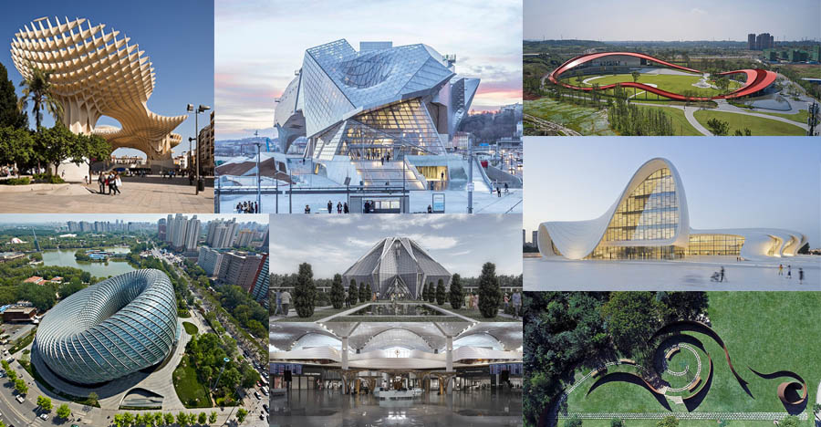

Архитектура
В мире есть города, знаменитые особой атмосферой, в них можно просто приехать и наслаждаться отдыхом. Но есть места, похожие на философскую книгу, которую мало прочитать, но еще нужно понять, где каждый дом или улица имеют свой смысл.
Тысячелетняя история оставила огромное количество следов разных эпох и стилей. На данном сайте можно узнать: историю архитектуры, стили и биографию архитекторов, которые сотворили наш Мир